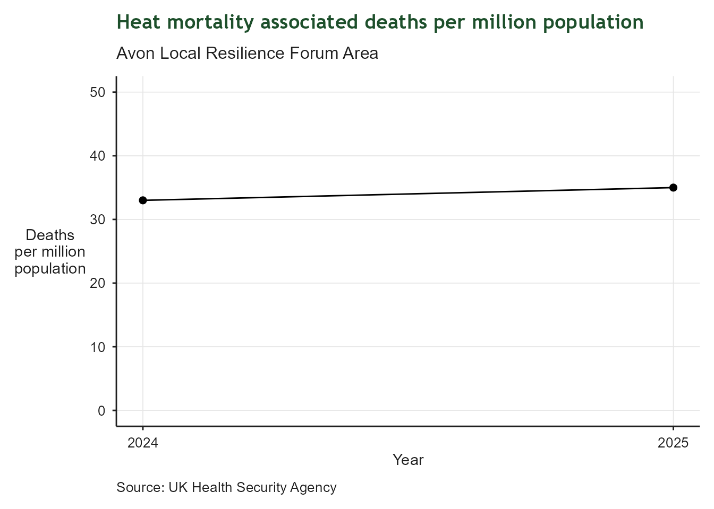
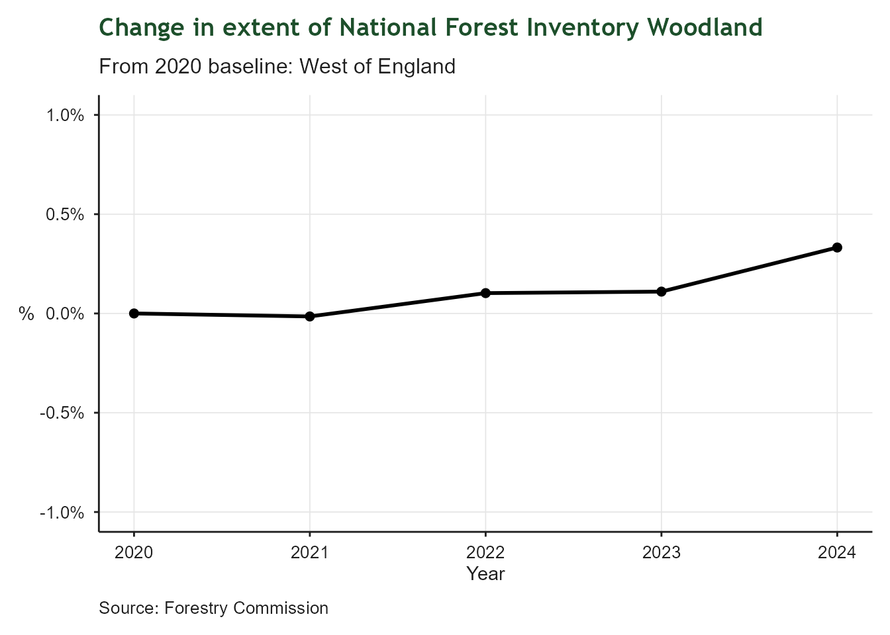

| Greenhouse Gas Emissions | |
| Transport, Commercial, Industry, Public sector, Domestic | |
| Latest value | 4,409.7 Kt CO2e (2023-12-31) |
| Previous value | 4,580.2 Kt CO2e (2022-12-31) |
| Change vs previous | -3.7% |
| First value | 5,970.9 Kt CO2e (2014-12-31) |
| Change since first | -26.1% |
| Observations | 10 |
| Trend | |
| Last updated | 2026-04-23 |
5 Green Jobs and Growth
Making the West of England the home for green jobs and growth
5.1 Context
This chapter tracks indicators related to green economy and environmental sustainability across the West of England. Topics include carbon emissions, renewable energy, water pollution, climate resilience and public health.
5.2 Greenhouse Gas Emissions
5.2.1 Overview
Regional greenhouse gas emissions from transport, domestic, commercial, industrial and public sectors. This tracks the region’s progress toward the net zero target by 2030 and identifies key sectors for emissions reduction.
![Stacked bar chart of greenhouse gas emissions by sector in the West of England Combined Authority area, 2014 to 2023. The y-axis shows emissions in kilotonnes of CO2 equivalent; the x-axis shows year. Five sectors are colour-coded: Transport (green, largest), Domestic (red), Commercial (dark green), Industry (purple), and Public Sector (black). Total emissions declined from around 6,000 kt CO2e in 2014 to approximately 4,400 kt CO2e in 2023, though the region is not on track to meet its 2030 net zero target. Transport and domestic heating remain the dominant sectors.](index_files/figure-html/RI_5_ghg_emissions-1.png)
5.2.2 Findings
Emissions have declined steadily over several years. Transport and domestic sectors dominate. The region is currently not on track to meet the 2030 net zero target, indicating a need for accelerated action in key sectors. Demand reduction for personal car use and the introduction of low - carbon heating for homes remain key priorities for the region.
5.3 Renewable Energy
| Renewable Electricity Installed Capacity | |
| Installed capacity per square Km | |
| Latest value | 0.4 MW/km2 (2024-12-31) |
| Previous value | 0.4 MW/km2 (2023-12-31) |
| Change vs previous | +4.8% |
| First value | 0.2 MW/km2 (2015-12-31) |
| Change since first | +110.6% |
| Observations | 10 |
| Trend | |
| Last updated | 2026-04-23 |
5.3.1 Overview
Potential for renewable energy capacity is strongly influenced by land availability and price, hence this indicator is expressed in terms of Megawatts per square Kilometre to enable future comparison with other regions.

5.3.2 Findings
Installed capacity has climbed steadily over the last 10 years, reflecting central government policy and the region’s ambitions for Net Zero. The National Energy Systems Operator (NESO) is currently developing regional energy strategic plans which may drive further growth in installed capacity.
5.4 Domestic Renewable Energy
| Domestic Renewable Energy | |
| Photovoltaic sites | |
| Latest value | 0.1 Sites per household (2024-12-31) |
| Previous value | 0.1 Sites per household (2023-12-31) |
| Change vs previous | +13.1% |
| First value | 0.0 Sites per household (2015-12-31) |
| Change since first | +112.0% |
| Observations | 10 |
| Trend | |
| Last updated | 2026-04-23 |
5.4.1 Overview
Solar photovoltaic (PV) installations are a key aspect of energy security and net zero. This indicator tracks installations per household in the region.

5.4.2 Findings
Installations of PV panels have increased steadily over the last 10 years.
5.5 Non-Domestic Energy Performance
| Non - Domestic Energy Ratings | |
| Proportion of properties rated A or A+ | |
| Latest value | 4.7% (2026-03-31) |
| Previous value | 4.6% (2026-02-28) |
| Change vs previous | +0.0 ppts |
| First value | 2.1% (2017-04-30) |
| Change since first | +2.6 ppts |
| Observations | 108 |
| Trend | |
| Last updated | 2026-04-23 |
5.5.1 Overview
This indicator measures the energy efficiency of non - domestic property by expressing the proportion of properties which have an energy rating of A or A+, in other words the best performing properties.

5.5.2 Findings
The improvement in the proportion of properties meeting an A or A+ standard is slow but steady. WECA’s Low Carbon Business Support team help businesses improve their energy efficiency with assessments, advice and grants.
5.6 Heat Associated Mortality
| Heat Associated Mortality | |
| Deaths per million population | |
| Latest value | 35.0 deaths per million (2025-12-31) |
| Previous value | 33.0 deaths per million (2024-12-31) |
| Change vs previous | +6.1% |
| First value | 33.0 deaths per million (2024-12-31) |
| Change since first | +6.1% |
| Observations | 2 |
| Trend | |
| Last updated | 2026-04-23 |
5.6.1 Overview
This indicator tracks the number of heat associated deaths per million population in the Avon Local Resilience Forum area, which largely correlates with the West of England. It provides insight into the region’s vulnerability to heat stress through the lens of public health. Data for the region are only available since 2024.

5.6.2 Findings
A small increase in deaths per million for the region is likely to reflect the ongoing increase in ambient temperature arising from a warming climate. WECA has produced a Climate Adaptation Report to help the region prepare for the impacts of a warming climate.
5.7 Flood Warnings Intensity
| Flood Warnings Intensity Index | |
| Relative to 2020 baseline | |
| Latest value | 69.6 (2025-12-31) |
| Previous value | 167.0 (2024-12-31) |
| Change vs previous | -58.3% |
| First value | 100.0 (2020-12-31) |
| Change since first | -30.4% |
| Observations | 6 |
| Trend | |
| Last updated | 2026-04-23 |
5.7.1 Overview
This indicator is designed to represent the risk of flooding relative to a 2020 baseline. It is a duration-weighted composite indicator tracking flood warning activity across the West of England (Bristol, Bath & North East Somerset, South Gloucestershire, North Somerset and derived from the Environment Agency’s flood warnings dataset. It provides annual monitoring to support climate resilience reporting. The methodology for the indicator is described here.
![Line and point chart of the Flood Warning Intensity Index (FWII) for the West of England from 2020 to 2025. The y-axis shows the composite index value on a scale from 0 to 200; the x-axis shows year. A dashed green horizontal line marks the 2020 baseline at 100. The index fell sharply to around 40 in 2021 and 30 in 2022, returned to the baseline in 2023, peaked at approximately 165 in 2024, then dropped below the baseline to around 70 in 2025. The 2024 peak represents the highest flood warning intensity in the series.](index_files/figure-html/RI_5E2_flood_warning_index_plot-1.png)
5.7.2 Findings
2024 saw the highest level of flooding relative to the 2020 baseline, but the levels of warnings subsided below the baseline in the most recent reported year. Warnings do not necessarily translate into actual floods.
5.8 Tree Canopy
| Tree Canopy Cover | |
| National Forest Inventory Woodland | |
| Latest value | 10,656.6 Ha (2024-12-31) |
| Previous value | 10,632.9 Ha (2023-12-31) |
| Change vs previous | +0.2% |
| First value | 10,621.2 Ha (2020-12-31) |
| Change since first | +0.3% |
| Observations | 5 |
| Trend | |
| Last updated | 2026-04-23 |
5.8.1 Overview
This indicator tracks the extent of tree canopy cover in the region, as measured by the National Forest Inventory (NFI). Tree canopy cover is an important aspect of urban greening, biodiversity and climate resilience. The NFI dataset is filtered by the “Woodland” category and clipped to the boundary of the West of England to provide a regional measure of the area covered by woodland.

5.8.2 Findings
The extent of woodland varies very little from year to year, but the overall trend is positive with a small increase in canopy cover since 2020. Several initiatives are underway to increase tree canopy cover in the region, including the Forest of Avon project which is planting trees across the region to support biodiversity and climate resilience. These are likely to show in the indicator as the newly planted trees mature and are captured in the NFI dataset.
5.9 Water Catchment Health
| Water Catchment Health | |
| Proportion of surface waters in 'Good' ecological health | |
| Latest value | 14.4% (2022-12-31) |
| Previous value | 12.3% (2019-12-31) |
| Change vs previous | +2.2 ppts |
| First value | 12.3% (2019-12-31) |
| Change since first | +2.2 ppts |
| Observations | 2 |
| Trend | |
| Last updated | 2026-04-23 |
5.9.1 Overview
This indicator tracks the ecological health of surface waters in the catchment which most closely represents the region - Avon Bristol and Somerset North Streams. It is expressed as the proportion of surface waters in ‘Good’ ecological health. The data are derived from the Environment Agency’s regular water quality monitoring programme. Surface water classification and sources have changed over the years, so data prior to 2019 are not comparable with recent datasets.

5.9.2 Findings
Data from recent years show little variation and reflect the national picture on the state of surface waters. The number of water bodies sampled has not changed significantly. Several sources of pollution impact water quality including agricultural run - off and untreated sewage discharge.
5.10 Summary
Summary of key findings across all green economy indicators. What is the overall picture for green jobs and growth?